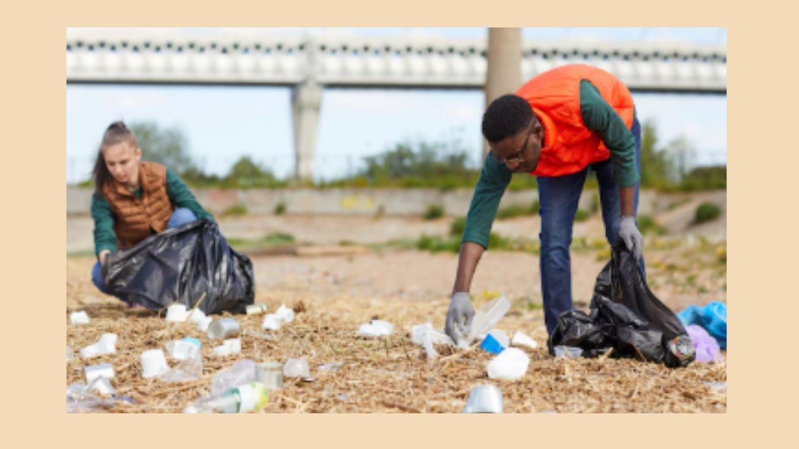
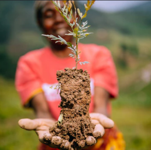

Ko au te whenua, ko te whenua ko au.
I started this project as a way to save the life my inner self wanted, and then it grew into more than that. In school, I learned two words that stuck with me for life, and they were kaitiakitanga and manaakitanga. In my school days, I was annoyed because every year they would talk about the same thing over and over again. But now I see the true meaning. Manaakitanga is not only about being caring, nice, and loving to the people around you; it is also to the land that houses you.
The land takes care of us without even asking the people for anything, and now humans have taken this hospitality as a sign to do whatever they want. This is when the word kaitiakitanga emerged in my head. After years of school life, I did not understand what that word truly meant, but now it has revealed itself. Kaitiakitanga shows that when we take care of the land around us, it is not only us taking care of the land—it is that we see the land as one with us.
I am the land and the land is me. Ko au te whenua, ko te whenua ko au. This motto has stayed with me in my heart throughout the process of making this website. So, the true goal of this website is to make people truly feel the connection with the land, and that without it, we are nothing.


This over 100 millon kgs of rubbish has been picked up all accroess the world due to environment advisory
In the pass year we have planted over 10 millon trees and it is thanks to all your help
Due to your donated money, we are able to do more research on ways we can stop climate change. An example is the new material that can be used in clothes, which is made of recycled paper.